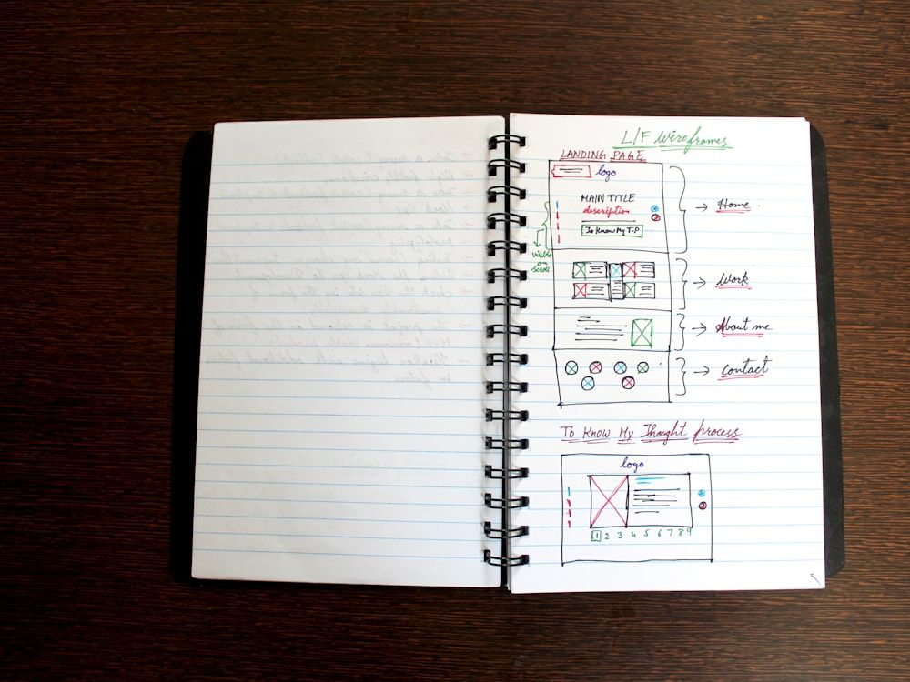

Private tutoring · Math · Science · Language
Preparation…Mastery…
Success…Maxematics.
Maxematics — pairing real subject mastery with a simple belief: the experts in anything were once beginners too. With tailored programs for every student, Maxematics tackles concepts one at a time.
14
Topics
10+
Weekly students
2022
Tutoring since
1:1
Every session
Why Maxematics
The Maxematics Difference
- ◆ Every program tailored to the student
- ◆ Custom worksheets & practice exams
- ◆ Virtual, or in a Tampa learning space
- ◆ Study & time-management skills
- ◆ Summer refreshers & final-exam prep
- ◆ SAT/ACT/DESMOS support

Meet Max
Meet “The Max” in Maxematics
“If you think of something as ‘hard’ it will be. It doesn’t have to be that way.”
Max started tutoring with the idea that academic success is found at the intersection of preparation and attitude. While hurdling challenges and gaining mastery are obvious tutoring goals, Max aims to do that while inspiring a shift in thinking that makes learning genuinely fun.
Beyond tutoring, Max is a Biomedical-STEM student, a researcher, and a campus leader — captain of varsity rowing, director of his school’s Writing Center and founder of the Pie & Pi Club. Max’s personal commitment to excellence is mirrored in his commitment to every student.
A record that speaks for itself.
Anne Frank Humanitarian Award
2026
Excellence — Math · Science · History
Department Awards, 2021–26
Cum Laude Society
Inducted 2026
Tampa Prep Head’s List
A+ achieved in all subjects
Writing Center Director
Tampa Prep, 2024–26
AP Scholar with Distinction
College Board — 5’s on all AP exams
HOBY Youth Leadership
Ambassador, 2025
Best Overall Research — HC STEM Fair
Awarded by FL Teacher’s Association
Varsity Rowing Captain
“Coaches Award,” ’25, ’26
Topics
One Tutor,
many topics.





What families say
Results students feel.
“Max is an exceptional tutor. He explains concepts in clear and methodical ways for students at any level — his students consistently expand their comprehension, improve their grades, and move on to the next level of math and science with confidence and enthusiasm. Max is simply one of the best!”
 Lakshmi Jayaram, Ph.D.Executive Director, Prep & Me
Lakshmi Jayaram, Ph.D.Executive Director, Prep & Me
“Max has helped me prepare for the SAT/ACT. He knows all the math and helped me figure out things I was otherwise guessing at — and he’s such a nice guy and so comfortable to work with. If I had to recommend anyone to get your scores up, it would be Max.”
 Eva T.SAT / ACT Prep
Eva T.SAT / ACT Prep
“I was struggling in Geometry and worried about completing the class. Since starting with Max I haven’t gotten less than a 90% on any assignment or assessment. He makes math easy to understand and quickly figured out where I was going wrong.”
 Ker’Varis M.Geometry
Ker’Varis M.Geometry
“Max has been great at filling in skills my daughter struggled with. He even provided sample worksheets and tests that focused on her weaknesses. My daughter loves working with him.”
 Alice H.Parent
Alice H.Parent
“Chemistry was my arch enemy before I started working with Max. Once I understood the basics a lot better, everything just made more sense. I can’t believe I’m writing this, but I’ve actually started to like Chemistry.”
 Connor J.Chemistry
Connor J.Chemistry
Rates
Simple, tailored sessions.
Book by the session or save with the 10-hour package.
| Session | Rate |
|---|---|
| 30 minutes | $25 |
| 1 hour | $40 |
| 1.5 hours | $60 |
10-hour package Schedule in any increments | $375 |
Zelle, check, or cash accepted.
Virtual session checklist
- Tablet (preferred) or computer with internet
- Access to Zoom
- Paper & pencil
- Helpful, not required: Apple Pencil

Giving back
The Gen. H Norman Schwarzkopf Scholarship
Max's grandfather spent his life in service — to his country, and to the young men and women who served alongside him. What fewer people know is that he was also an educator, teaching calculus and mechanics at West Point. The scholarship exists in his memory, honoring the value he placed on educating the next generation.
A full scholastic year of tutoring is awarded to one student each year, in September.
"You can't help someone else up a hill without getting a little closer to the top yourself."
Full scholarship story & application form open on the next page in the coded build.
Out in the world
Look for Maxematics around Tampa.
From the annual scholarship to free exam-prep workshops — here's what's currently circulating.


Contact
Start the conversation.
Tutoring inquiries, scholarship questions, and scheduling — send a note and Max will reply. Availability is limited, so a little detail about the student and the goal helps.
Affiliations, certifications & recognition